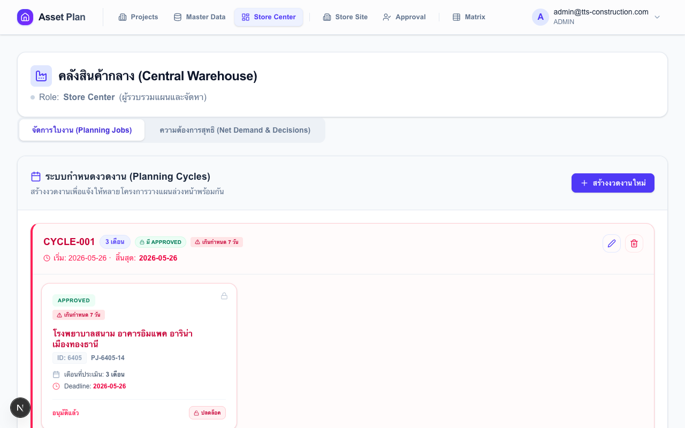
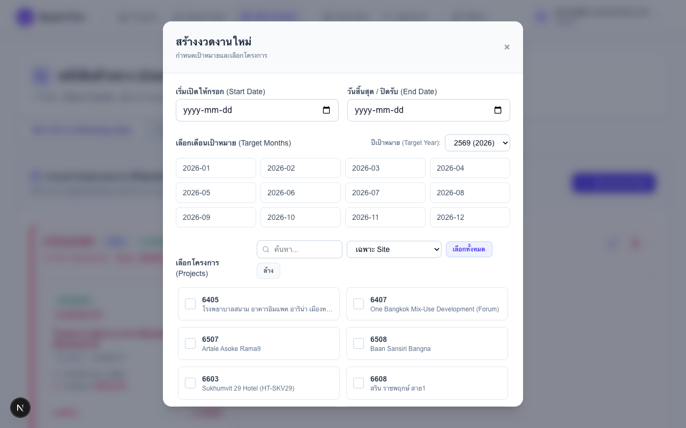
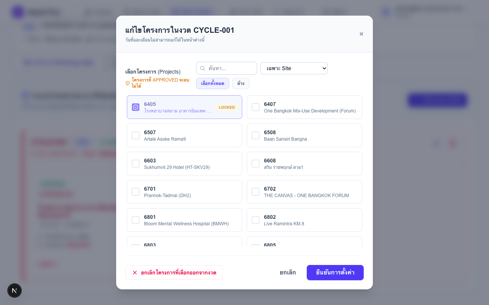
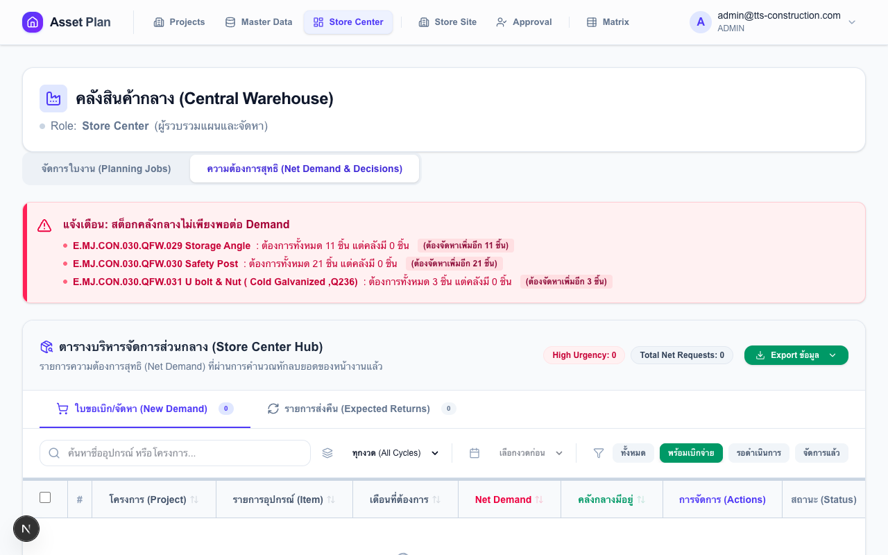
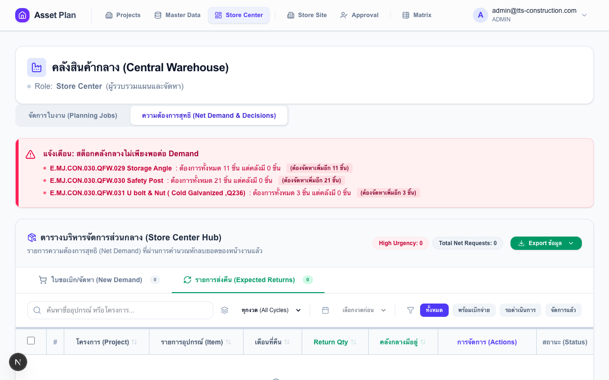
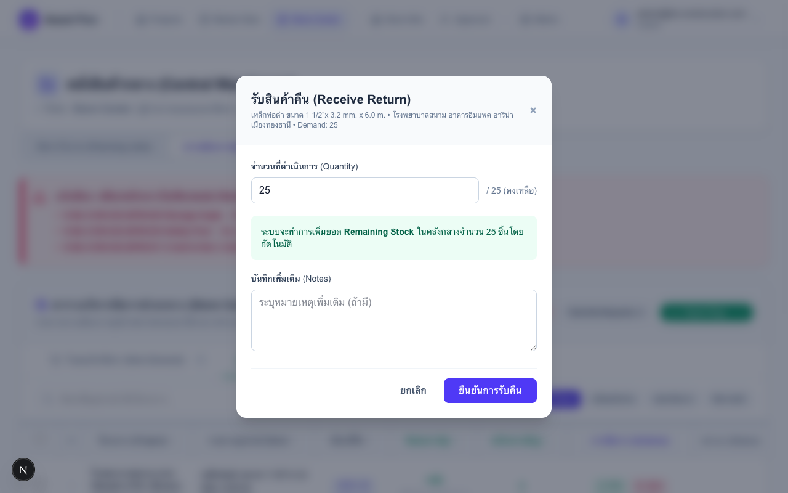
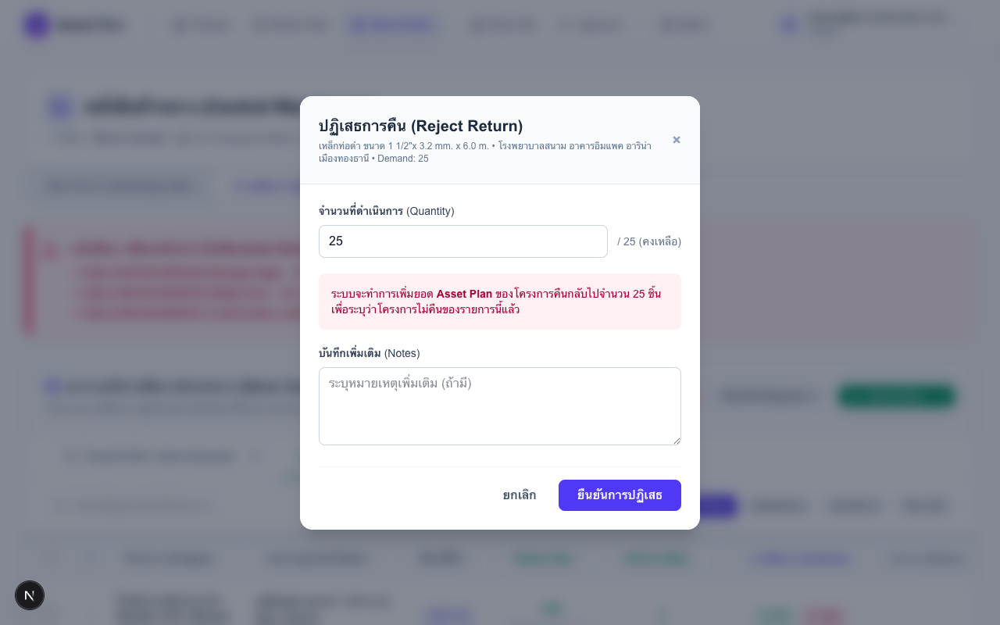
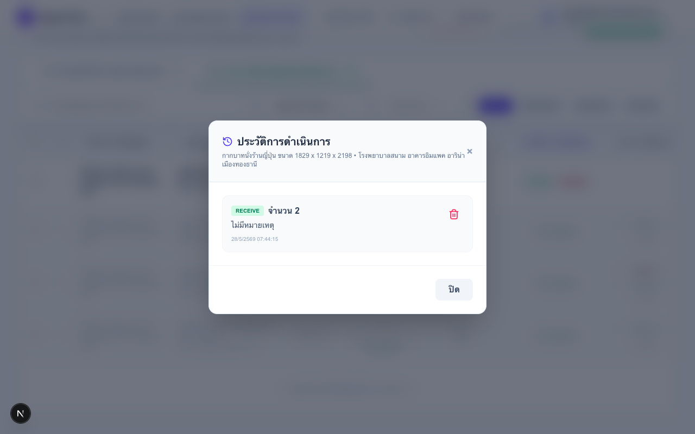

คู่มือเจ้าหน้าที่พัสดุส่วนกลาง (Store Center)
บริหารรอบแผน ติดตามความต้องการสุทธิ จัดสรรครุภัณฑ์ และบริหารของคืน
ภาพรวมแท็บจัดการใบงาน
แท็บนี้แสดง Cycle Card ทุกรอบแผนที่สร้างไว้ แต่ละ Card แสดงรายการใบงานของทุกโครงการในรอบนั้น

สีขอบ Cycle Card บอกสถานะ Deadline:
| สีขอบ | ความหมาย | สิ่งที่ควรทำ |
|---|---|---|
| แดง | เลยกำหนดส่งแล้ว | ติดต่อไซต์ที่ยังไม่ Submit ด่วน |
| เหลือง | เหลือ ≤ 3 วัน | แจ้งเตือนไซต์ล่วงหน้า |
| น้ำเงิน | ยังมีเวลาพอ | ติดตามปกติ |
Badge สถานะบน Job Card แต่ละใบ:
| Badge | ความหมาย | ปุ่มที่ปรากฏ |
|---|---|---|
| OPEN | รอบแผนเปิด ไซต์กรอกได้ | — (รอไซต์) |
| SUBMITTED | ไซต์ส่งแล้ว รอ PM | — (รอ PM) |
| APPROVED | PM อนุมัติ พร้อมจัดสรร | Unlock |
| CLOSED | รอบปิดแล้ว | ดูประวัติ |
สร้างรอบแผนใหม่ (Planning Cycle)
รอบแผนคือกรอบเวลาที่กำหนดให้ทุกไซต์ที่เลือกกรอกแผนความต้องการพร้อมกัน เมื่อสร้างแล้วระบบสร้าง Job ให้ทุกโครงการอัตโนมัติ
- กด "+ สร้างรอบแผนใหม่"
- กรอก วันเริ่มต้น และ วันสิ้นสุด (Deadline) — Deadline คือวันสุดท้ายที่ไซต์ต้องส่งแผน
- เลือก เดือนเป้าหมาย — คลิก Toggle แต่ละเดือน เปลี่ยนปีได้ที่ด้านบน (เลือกได้หลายเดือนพร้อมกัน)
- ค้นหาและเลือก โครงการที่เข้าร่วม:
- กรองประเภท SITE / ทั้งหมด หรือพิมพ์ค้นหาชื่อโครงการ
- กด "เลือกทั้งหมด" เพื่อเลือกทุกโครงการในผลค้นหาปัจจุบัน
- Tick แต่ละโครงการเพื่อเลือกเฉพาะที่ต้องการ
- กด "สร้าง" → ระบบสร้าง Job สถานะ OPEN ให้ทุกโครงการที่เลือกทันที

แก้ไขรอบ — เพิ่มหรือยกเลิกโครงการ
กดไอคอน ✏️ ที่ Cycle Card → Modal แก้ไขเปิดขึ้น แสดงโครงการที่เลือกอยู่ในปัจจุบัน

เพิ่มโครงการ:
- ค้นหาและ Tick โครงการที่ต้องการเพิ่ม
- กด "บันทึก" → ระบบสร้าง Job ใหม่สถานะ OPEN ให้โครงการที่เพิ่มทันที
ยกเลิกโครงการ:
- Deselect โครงการที่ต้องการยกเลิก (ปุ่มจะ Disable อัตโนมัติถ้า Job นั้น APPROVED แล้ว)
- กด "บันทึก"
ลบรอบทั้งหมด: กดไอคอน 🗑️ ที่ Cycle Card — ลบได้เฉพาะรอบที่ยังไม่มี Job ที่ APPROVED
Lock / Unlock ใบงาน
Store Center สามารถ Unlock ใบงานเพื่อให้ไซต์หรือ PM แก้ไขได้แม้ผ่าน Deadline หรือ APPROVED ไปแล้ว
| การกระทำ | ใช้เมื่อ | ผลที่เกิดขึ้น |
|---|---|---|
| Unlock | ไซต์ขอแก้ไขหลัง Submit / PM ขอแก้หลัง Approve | ไซต์กลับมาแก้ไขและส่งแผนใหม่ได้ / PM แก้ตัวเลขได้อีกครั้ง |
| Lock คืน | Unlock ไว้แล้วแต่ต้องการปิดอีกครั้ง | ป้องกันไม่ให้แก้ไขเพิ่มเติม |
ภาพรวมหน้าความต้องการสุทธิ
หน้านี้รวมความต้องการจากทุกไซต์ที่ PM อนุมัติแล้วไว้ในที่เดียว แบ่งเป็น 2 แท็บ: ใบขอเบิก/จัดหา และ รายการส่งคืน

แถบกรอง (Filter Bar) ด้านบน:
| ตัวกรอง | คำอธิบาย |
|---|---|
| รอบแผน | เลือกรอบที่ต้องการดูและจัดการ |
| เดือน | Toggle เลือกดูทีละเดือน หรือหลายเดือนพร้อมกัน (เฉพาะเดือนในรอบนั้น) |
| สถานะ | กรองตาม Status ของแต่ละรายการ (ดูตารางด้านล่าง) |
| ค้นหา | พิมพ์ชื่อครุภัณฑ์, รหัส, หรือชื่อโครงการ (ผลปรากฏหลัง 500ms) |
3 Status ของรายการ:
| Status | เงื่อนไข | ใช้กรองเมื่อ |
|---|---|---|
| READY | สต็อกคลังพอ + ยังไม่จัดสรรครบ | ต้องการทำรายการที่ทำได้ทันทีก่อน |
| PENDING | จัดสรรได้บางส่วน หรือสต็อกไม่พอ | ดูว่ายังค้างอยู่ที่ไหนบ้าง |
| COMPLETED | จัดสรรครบ 100% แล้ว | ตรวจสอบสิ่งที่ทำไปแล้ว |

จัดสรรครุภัณฑ์ — แท็บ "ใบขอเบิก/จัดหา"
แท็บนี้แสดงรายการที่ไซต์ ต้องการเพิ่มเติม จากที่มีอยู่ เลือก 1 ใน 5 วิธีสำหรับแต่ละรายการ:
ขั้นตอนการจัดสรร (ทีละรายการ):
- กดปุ่มวิธีที่ต้องการที่ปลายแถว (เบิกจ่าย / หมุนเวียน / สลับสเปก / จัดหา)
- ระบบกรอกจำนวนที่ยังค้าง (qty − fulfilled_qty) ให้อัตโนมัติ — แก้ไขได้ถ้าต้องการจัดสรรบางส่วน
- กรอก Notes (บังคับสำหรับ CIRCULATE และ SUBSTITUTE)
- กด "ยืนยัน"

Bulk Dispatch — เบิกจ่ายหลายรายการพร้อมกัน
ใช้เมื่อต้องการ DISPATCH หลายรายการในครั้งเดียวเพื่อประหยัดเวลา
- กรองสถานะเป็น READY ก่อน — เพื่อให้มองเห็นเฉพาะรายการที่ทำได้ทันที
- เลือกรายการด้วย Checkbox ด้านซ้ายของแต่ละแถว (หรือ Checkbox บน Header เพื่อเลือกทั้งหมด)
- กด "เบิกจ่ายรวม" ที่ปรากฏด้านบนหลังเลือกแล้ว
- ระบบแสดง Confirm พร้อมจำนวนรายการที่จะประมวลผลได้จริง
- กด "ยืนยัน" → ระบบประมวลผลทีละรายการตามลำดับ
รับของคืน — แท็บ "รายการส่งคืน"
แท็บนี้แสดงรายการที่ไซต์มีของ เกินกว่าที่วางแผน ระบบคำนวณให้อัตโนมัติจากแผนที่ PM อนุมัติ

2 การกระทำสำหรับแต่ละรายการ:
| ปุ่ม | ความหมาย | ผลต่อสต็อกคลังกลาง |
|---|---|---|
| รับคืน | ยืนยันรับของกลับเข้าคลัง | ⬆ สต็อกเพิ่ม |
| ปฏิเสธ | ไม่รับคืน ให้ไซต์เก็บไว้ใช้ต่อ | — สต็อกไม่เปลี่ยน |


ดูและแก้ไขประวัติการตัดสินใจ (History Modal)
ทุก Decision ที่เคยทำไว้ถูกบันทึก — คลิกไอคอน 🕐 ที่แถวนั้น หรือกด "แก้ไข" บนรายการ Completed

สิ่งที่เห็นใน History Modal:
- รายการ Decision ทั้งหมด — วิธี (DISPATCH/BUY/RENT/ฯลฯ), จำนวน, วันที่, ผู้ทำรายการ, Notes
- ยอดรวมที่จัดสรรไปแล้ว (fulfilled_qty) เทียบกับที่ต้องการ
ลบ Decision (กรณีทำผิด):
- กดไอคอนลบ 🗑️ ที่ Decision นั้น
- ยืนยันการลบ
- ระบบ Reverse สต็อกอัตโนมัติ:
- เคย DISPATCH → สต็อกคลังกลาง เพิ่มคืน
- เคย RECEIVE → สต็อกคลังกลาง ลด
- สถานะรายการกลับเป็น PENDING/READY — สามารถทำ Decision ใหม่ได้ทันที
Alert สต็อกไม่พอ และการ Export รายงาน
Alert แถบสีแดงด้านบนตาราง — ปรากฏเมื่อความต้องการรวมเกินสต็อกที่มี:
ใช้รายการ Alert นี้เป็น Checklist วางแผนจัดซื้อ / เช่า / CIRCULATE
Export Excel — มี 2 โหมด:
| ปุ่ม | ขอบเขตข้อมูล | ใช้เมื่อ |
|---|---|---|
| "ส่งออกตามที่กรองไว้" | ใช้ Search + Status + Month filter ปัจจุบัน | ต้องการเฉพาะส่วนที่กำลังดูอยู่ เช่น เฉพาะ PENDING เดือนนี้ |
| "ส่งออกทั้งหมด" | ทั้งรอบ — ไม่สนใจ Search/Status/Month | ต้องการข้อมูลครบทุกรายการส่งให้ฝ่ายจัดซื้อ |
ไฟล์ Excel มี 2 Sheet: New Demand + Expected Returns | คอลัมน์: โครงการ, รหัส, เดือน, จำนวน, ดำเนินการแล้ว, สต็อก, ความสำคัญ, Notes ล่าสุด